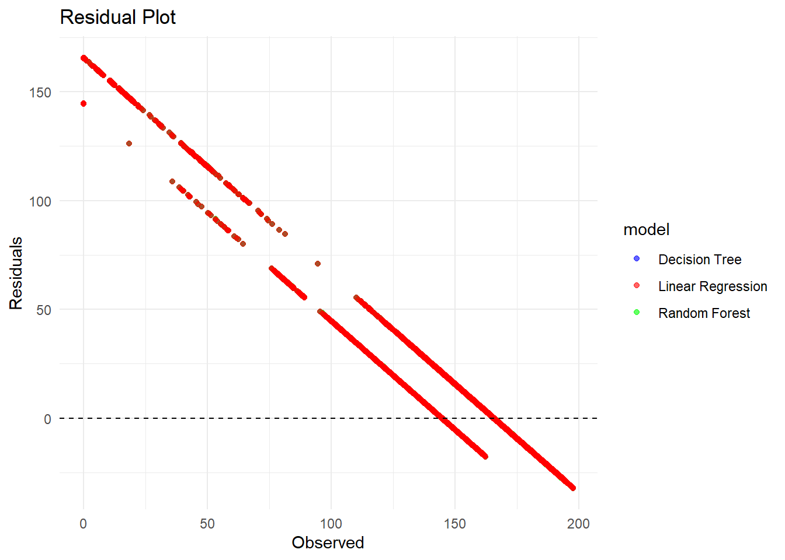

library(tidyverse)
library(jsonlite)
library(janitor)
library(here)
library(fs)
library(lubridate)
library(dplyr)
library(ggplot2)
library(tidymodels)
library(ranger)
library(yardstick)Tidy Tuesday Exercise
Eclipses Analysis
This exercise documents the process of analyzing datasets on solar eclipses provided for Tidy Tuesday. The goal is to model the duration of eclipses based on the year of occurence, focusing on total eclipse of 2024, annular eclipse of 2023 and partial eclipses of 2023 and 2024.
First, the required libraries were loaded
Data Acquisition
Data was sourced from the official Tidy Tuesday GitHub repository. Initial steps included setting up the working environment, downloading the data as JSON files, and transforming them into a tidy format.
Below codes imports the data files from the local directory directly.
#path to data using here function
data_location_1 <- here::here("tidytuesday-exercise", "eclipse_total_2024.csv")
data_location_2 <- here::here("tidytuesday-exercise", "eclipse_annular_2023.csv")
data_location_3 <- here::here("tidytuesday-exercise", "eclipse_partial_2024.csv")
data_location_4 <- here::here("tidytuesday-exercise", "eclipse_partial_2023.csv")
eclipse_total_2024 <- read.csv(data_location_1)
eclipse_annular_2023<-read.csv(data_location_2)
eclipse_partial_2024 <- read.csv(data_location_3)
eclipse_partial_2023 <- read.csv(data_location_4)Checking the data
skimr::skim(eclipse_total_2024)| Name | eclipse_total_2024 |
| Number of rows | 3330 |
| Number of columns | 10 |
| _______________________ | |
| Column type frequency: | |
| character | 8 |
| numeric | 2 |
| ________________________ | |
| Group variables | None |
Variable type: character
| skim_variable | n_missing | complete_rate | min | max | empty | n_unique | whitespace |
|---|---|---|---|---|---|---|---|
| state | 0 | 1 | 2 | 2 | 0 | 14 | 0 |
| name | 0 | 1 | 3 | 33 | 0 | 2938 | 0 |
| eclipse_1 | 0 | 1 | 8 | 8 | 0 | 416 | 0 |
| eclipse_2 | 0 | 1 | 8 | 8 | 0 | 398 | 0 |
| eclipse_3 | 0 | 1 | 8 | 8 | 0 | 2012 | 0 |
| eclipse_4 | 0 | 1 | 8 | 8 | 0 | 2032 | 0 |
| eclipse_5 | 0 | 1 | 8 | 8 | 0 | 340 | 0 |
| eclipse_6 | 0 | 1 | 8 | 8 | 0 | 293 | 0 |
Variable type: numeric
| skim_variable | n_missing | complete_rate | mean | sd | p0 | p25 | p50 | p75 | p100 | hist |
|---|---|---|---|---|---|---|---|---|---|---|
| lat | 0 | 1 | 38.33 | 3.98 | 28.45 | 35.42 | 39.24 | 41.22 | 46.91 | ▂▃▆▇▂ |
| lon | 0 | 1 | -86.93 | 7.07 | -101.16 | -92.41 | -86.56 | -82.31 | -67.43 | ▃▆▇▃▁ |
skimr::skim(eclipse_annular_2023)| Name | eclipse_annular_2023 |
| Number of rows | 811 |
| Number of columns | 10 |
| _______________________ | |
| Column type frequency: | |
| character | 8 |
| numeric | 2 |
| ________________________ | |
| Group variables | None |
Variable type: character
| skim_variable | n_missing | complete_rate | min | max | empty | n_unique | whitespace |
|---|---|---|---|---|---|---|---|
| state | 0 | 1 | 2 | 2 | 0 | 8 | 0 |
| name | 0 | 1 | 3 | 30 | 0 | 795 | 0 |
| eclipse_1 | 0 | 1 | 8 | 8 | 0 | 118 | 0 |
| eclipse_2 | 0 | 1 | 8 | 8 | 0 | 161 | 0 |
| eclipse_3 | 0 | 1 | 8 | 8 | 0 | 632 | 0 |
| eclipse_4 | 0 | 1 | 8 | 8 | 0 | 608 | 0 |
| eclipse_5 | 0 | 1 | 8 | 8 | 0 | 212 | 0 |
| eclipse_6 | 0 | 1 | 8 | 8 | 0 | 244 | 0 |
Variable type: numeric
| skim_variable | n_missing | complete_rate | mean | sd | p0 | p25 | p50 | p75 | p100 | hist |
|---|---|---|---|---|---|---|---|---|---|---|
| lat | 0 | 1 | 35.41 | 4.96 | 27.22 | 31.30 | 35.42 | 38.42 | 44.87 | ▅▂▇▂▃ |
| lon | 0 | 1 | -108.05 | 8.27 | -124.45 | -111.98 | -106.70 | -101.36 | -96.72 | ▅▁▆▇▇ |
skimr::skim(eclipse_partial_2024)| Name | eclipse_partial_2024 |
| Number of rows | 28844 |
| Number of columns | 9 |
| _______________________ | |
| Column type frequency: | |
| character | 7 |
| numeric | 2 |
| ________________________ | |
| Group variables | None |
Variable type: character
| skim_variable | n_missing | complete_rate | min | max | empty | n_unique | whitespace |
|---|---|---|---|---|---|---|---|
| state | 0 | 1 | 2 | 2 | 0 | 52 | 0 |
| name | 0 | 1 | 2 | 57 | 0 | 19576 | 0 |
| eclipse_1 | 0 | 1 | 7 | 8 | 0 | 559 | 0 |
| eclipse_2 | 0 | 1 | 7 | 8 | 0 | 570 | 0 |
| eclipse_3 | 0 | 1 | 7 | 8 | 0 | 527 | 0 |
| eclipse_4 | 0 | 1 | 7 | 8 | 0 | 492 | 0 |
| eclipse_5 | 0 | 1 | 7 | 8 | 0 | 583 | 0 |
Variable type: numeric
| skim_variable | n_missing | complete_rate | mean | sd | p0 | p25 | p50 | p75 | p100 | hist |
|---|---|---|---|---|---|---|---|---|---|---|
| lat | 0 | 1 | 38.76 | 6.01 | 17.96 | 35.24 | 39.52 | 42.04 | 71.25 | ▁▇▇▁▁ |
| lon | 0 | 1 | -93.00 | 16.35 | -176.60 | -99.08 | -90.30 | -81.16 | 174.11 | ▂▇▁▁▁ |
skimr::skim(eclipse_partial_2023)| Name | eclipse_partial_2023 |
| Number of rows | 31363 |
| Number of columns | 9 |
| _______________________ | |
| Column type frequency: | |
| character | 7 |
| numeric | 2 |
| ________________________ | |
| Group variables | None |
Variable type: character
| skim_variable | n_missing | complete_rate | min | max | empty | n_unique | whitespace |
|---|---|---|---|---|---|---|---|
| state | 0 | 1 | 2 | 2 | 0 | 52 | 0 |
| name | 0 | 1 | 2 | 57 | 0 | 20664 | 0 |
| eclipse_1 | 0 | 1 | 7 | 8 | 0 | 674 | 0 |
| eclipse_2 | 0 | 1 | 7 | 8 | 0 | 527 | 0 |
| eclipse_3 | 0 | 1 | 7 | 8 | 0 | 508 | 0 |
| eclipse_4 | 0 | 1 | 7 | 8 | 0 | 635 | 0 |
| eclipse_5 | 0 | 1 | 7 | 8 | 0 | 698 | 0 |
Variable type: numeric
| skim_variable | n_missing | complete_rate | mean | sd | p0 | p25 | p50 | p75 | p100 | hist |
|---|---|---|---|---|---|---|---|---|---|---|
| lat | 0 | 1 | 38.80 | 5.83 | 17.96 | 35.36 | 39.56 | 41.93 | 71.25 | ▁▇▇▁▁ |
| lon | 0 | 1 | -91.97 | 15.70 | -176.60 | -97.50 | -89.26 | -81.14 | 174.11 | ▂▇▁▁▁ |
The data does not seem to have any missing values.
Checking the header
head(eclipse_total_2024) state name lat lon eclipse_1 eclipse_2 eclipse_3 eclipse_4
1 AR Acorn 34.63879 -94.20011 17:30:40 18:15:50 18:47:35 18:51:37
2 AR Adona 35.03993 -92.89913 17:33:20 18:18:30 18:50:08 18:54:22
3 AR Alexander 34.61859 -92.45122 17:33:20 18:18:30 18:51:09 18:53:38
4 AR Alicia 35.89291 -91.08345 17:37:30 18:22:40 18:54:29 18:58:05
5 AR Alix 35.42200 -93.72878 17:32:50 18:17:50 18:49:54 18:53:00
6 AR Alleene 33.76482 -94.26220 17:29:10 18:14:20 18:46:15 18:50:16
eclipse_5 eclipse_6
1 19:23:40 20:08:30
2 19:26:10 20:10:50
3 19:26:20 20:11:10
4 19:29:50 20:14:10
5 19:25:20 20:10:00
6 19:22:30 20:07:40head(eclipse_annular_2023) state name lat lon eclipse_1 eclipse_2 eclipse_3
1 AZ Chilchinbito 36.49200 -110.0492 15:10:50 15:56:20 16:30:29
2 AZ Chinle 36.15115 -109.5787 15:11:10 15:56:50 16:31:21
3 AZ Del Muerto 36.18739 -109.4359 15:11:20 15:57:00 16:31:13
4 AZ Dennehotso 36.82900 -109.8757 15:10:50 15:56:20 16:29:50
5 AZ Fort Defiance 35.74750 -109.0680 15:11:40 15:57:40 16:32:28
6 AZ Kayenta 36.71717 -110.2605 15:10:40 15:56:00 16:29:54
eclipse_4 eclipse_5 eclipse_6
1 16:33:31 17:09:40 18:02:10
2 16:34:06 17:10:30 18:03:20
3 16:34:31 17:10:40 18:03:30
4 16:34:07 17:09:40 18:02:00
5 16:34:35 17:11:30 18:04:30
6 16:33:21 17:09:10 18:01:30head(eclipse_partial_2024) state name lat lon eclipse_1 eclipse_2 eclipse_3 eclipse_4
1 AL Abanda 33.09163 -85.52703 17:43:00 18:24:10 19:02:00 19:39:20
2 AL Abbeville 31.56471 -85.25912 17:41:40 18:21:40 19:00:30 19:38:50
3 AL Adamsville 33.60231 -86.97153 17:41:00 18:23:10 19:00:00 19:36:40
4 AL Addison 34.20268 -87.17800 17:41:30 18:24:10 19:00:30 19:36:40
5 AL Akron 32.87907 -87.74090 17:38:40 18:20:40 18:58:00 19:35:00
6 AL Alabaster 33.21435 -86.82308 17:40:40 18:22:40 18:59:50 19:36:50
eclipse_5
1 20:18:50
2 20:17:20
3 20:17:30
4 20:18:00
5 20:15:50
6 20:17:20head(eclipse_partial_2023) state name lat lon eclipse_1 eclipse_2 eclipse_3 eclipse_4
1 AL Abanda 33.09163 -85.52703 15:41:20 16:23:30 17:11:10 18:00:00
2 AL Abbeville 31.56471 -85.25912 15:42:30 16:25:50 17:13:50 18:03:10
3 AL Adamsville 33.60231 -86.97153 15:38:20 16:20:50 17:07:50 17:56:30
4 AL Addison 34.20268 -87.17800 15:37:50 16:19:50 17:06:50 17:55:10
5 AL Akron 32.87907 -87.74090 15:37:20 16:20:40 17:07:30 17:56:00
6 AL Alabaster 33.21435 -86.82308 15:38:50 16:21:30 17:08:40 17:57:20
eclipse_5
1 18:45:10
2 18:49:30
3 18:42:10
4 18:40:30
5 18:42:50
6 18:43:20Setting a random seed for reproducibility
rngseed = 123Feature Engineering
I added a column for duration of visibility in minutes for all solar eclipses from first to last contact.
#Calculating and adding duration of the eclipse to total eclipse of 2024
eclipse_total_2024<- eclipse_total_2024 %>%
mutate(
eclipse_1_time = hms(eclipse_1),
eclipse_6_time = hms(eclipse_6),
duration = as.numeric(eclipse_6_time - eclipse_1_time)/60 )
#Calculating and adding duration of the eclipse to annular eclipse of 2023
eclipse_annular_2023<- eclipse_annular_2023 %>%
mutate(
eclipse_1_time = hms(eclipse_1),
eclipse_6_time = hms(eclipse_6),
duration = as.numeric(eclipse_6_time - eclipse_1_time)/60
)
#Calculating and adding duration of the eclipse to partial eclipse of 2024
eclipse_partial_2024<- eclipse_partial_2024 %>%
mutate(
eclipse_1_time = hms(eclipse_1),
eclipse_5_time = hms(eclipse_5),
duration = as.numeric(eclipse_5_time - eclipse_1_time)/60 )
#Calculating and adding duration of the eclipse to the partial eclipse of 2024
eclipse_partial_2023<- eclipse_partial_2023 %>%
mutate(
eclipse_1_time = hms(eclipse_1),
eclipse_5_time = hms(eclipse_5),
duration = as.numeric(eclipse_5_time - eclipse_1_time)/60 )In the next phase, I will merge all of the datasets into a single data. Before that, I added a column of eclipse year in each of the data so that each observation can be identified as to which year the eclipse was from and also another column of eclipse type for the purpose of plotting.
#Adding a year identifier column to the total eclipse 2024 data
eclipse_total_2024 <- mutate(eclipse_total_2024, eclipse_type='Total_2024', eclipse_year='2024')
#Adding a year identifier column to the Annular eclipse 2023 data
eclipse_annular_2023 <- mutate(eclipse_annular_2023, eclipse_type='Annular_2023', eclipse_year = '2023')
#Adding a year identifier column to the partial eclipse 2024 data
eclipse_partial_2024 <- mutate(eclipse_partial_2024, eclipse_type='Partial_2024',eclipse_year='2024')
#Adding a year identifier column to the partial eclipse 2023 data
eclipse_partial_2023 <- mutate(eclipse_partial_2023, eclipse_type='Partial_2023',eclipse_year='2023')I combined all the 4 datasets by rows and kept state, city name, lattitude, longitude, duration and eclipse year in the final data. I converted the eclipse_year to a factor variable.
#Combining all the data sets by row
eclipse_long<- bind_rows(eclipse_total_2024, eclipse_annular_2023, eclipse_partial_2024,eclipse_partial_2023 )%>%
#Selecting relevant columns
select(state, name, lat, lon, duration, eclipse_year, eclipse_type)%>%
#convert to factor
mutate(eclipse_year=factor(eclipse_year))Exploratory Data Analysis
I created histograms and box plots to visualize the distribution of eclipse durations. Initial observations suggested that the 2023 eclipses had longer durations than those in 2024. This hypothesis will be tested further in the modeling phase.
#Histograms of eclipse duration for each year
ggplot(eclipse_long, aes(x = duration)) +
geom_histogram(bins = 50, fill = "skyblue", color = "black") + # Adjust bins as needed
facet_wrap(~ eclipse_type, scales = "free_y") + # Free y scales if counts vary significantly
labs(title = "Duration by Eclipse Year and Type",
x = "Duration",
y = "Count") +
theme_minimal()#Box plot of duration by eclipse year
ggplot(eclipse_long, aes(x = eclipse_year, y = duration, fill = eclipse_year)) +
geom_boxplot() +
labs(title = "Distribution of duration by year of eclipse", x = "year", y = "Duration") +
theme_minimal()Model Building
I created three different models using cross-validation to predict eclipse durations:
- Linear Model
- Random Forest (RF)
- Decision Tree (DT)
First the data was randomly splitted into 75% train and 25% test sets with the models trained on the former.
#setting the random seed for reproducibility
set.seed(rngseed)
#Assigning 75% of the data into the training set
data_split <- initial_split(eclipse_long, prop = .75)
#Creating data frames for the train and test data
train_data <- training(data_split)
test_data <- testing(data_split)
cv_folds <- vfold_cv(train_data, v=5)#Linear model
lin_model <- linear_reg()%>%
set_engine ("lm")%>%
set_mode("regression")
#Random forest model
RF_model <- rand_forest()%>%
set_engine("ranger", seed = rngseed)%>%
set_mode("regression")
#Decision Tree model
DT_model <- decision_tree()%>%
set_engine("rpart")%>%
set_mode("regression")I set up the workflow for all the models.
#workflow for linear model
lin_workflow <- workflow()%>%
add_model(lin_model)%>%
add_formula(duration ~ eclipse_year)
#workflow for Random forest model
RF_workflow <- workflow()%>%
add_model(RF_model)%>%
add_formula(duration ~ eclipse_year)
#workflow for Decision Tree model
DT_workflow <- workflow()%>%
add_model(DT_model)%>%
add_formula(duration ~ eclipse_year)Fit the models
#Defining resampling control to save predictions
resampling_control <- control_resamples(save_pred = TRUE)
#linear fit with CV
lin_fit_cv <- fit_resamples(lin_workflow, resamples=cv_folds, metrics = metric_set(rmse, rsq),control = resampling_control)
#Random forest fit with CV
RF_fit_cv <- fit_resamples (RF_workflow, resamples = cv_folds, metrics = metric_set(rmse, rsq),control = resampling_control)
#Decision Tree fit with CV
DT_fit_cv <- fit_resamples(DT_workflow, resamples = cv_folds, metrics = metric_set(rmse, rsq),control = resampling_control)
#Collecting the metrics
lin_metrics <-collect_metrics(lin_fit_cv)
RF_metrics <-collect_metrics(RF_fit_cv)
DT_metrics <-collect_metrics(DT_fit_cv)
#Collecting the predictions
lin_predicts<- collect_predictions(lin_fit_cv)
RF_predicts <- collect_predictions(RF_fit_cv)
DT_predicts <- collect_predictions(DT_fit_cv)I will choose the best model by comparing the RMSE metric, accuracy of the predicted vs observed value and residuals of the models.
# Extracting mean RMSE and R² for Linear Regression
lin_rmse <- lin_metrics %>% filter(.metric == "rmse") %>% pull(mean)
lin_rsq <- lin_metrics %>% filter(.metric == "rsq") %>% pull(mean)
# Extracting mean RMSE and R² for Random Forest
RF_rmse <- RF_metrics %>% filter(.metric == "rmse") %>% pull(mean)
RF_rsq <- RF_metrics %>% filter(.metric == "rsq") %>% pull(mean)
# Extracting mean RMSE and R² for Decision Tree
DT_rmse <- DT_metrics %>% filter(.metric == "rmse") %>% pull(mean)
DT_rsq <- DT_metrics %>% filter(.metric == "rsq") %>% pull(mean)
# Displaying the extracted metrics
cat("Linear Regression - RMSE:", lin_rmse, "R²:", lin_rsq, "\n")Linear Regression - RMSE: 20.87319 R²: 0.2013844 cat("Random Forest - RMSE:", RF_rmse, "R²:", RF_rsq, "\n")Random Forest - RMSE: 20.87324 R²: 0.2013844 cat("Decision Tree - RMSE:", DT_rmse, "R²:", DT_rsq, "\n")Decision Tree - RMSE: 20.87319 R²: 0.2013844 We can see that the the Linear and Decision Tree models perform slightly better than the Random Forest model based on the RMSE metric though the values are almost similar.
I calculated the predicted values for the training data and residuals.
#Predicting on the training data
lin_predictions <- collect_predictions(lin_fit_cv)
RF_predictions <- collect_predictions(RF_fit_cv)
DT_predictions <- collect_predictions(DT_fit_cv)
# Calculate residuals
lin_predictions <- lin_predictions %>% mutate(residuals = .pred - duration)
RF_predictions <- RF_predictions %>% mutate(residuals = .pred - duration)
DT_predictions <- DT_predictions %>% mutate(residuals = .pred - duration)
# Labeling each data frame of predictions before combining
DT_predictions$model <- "Decision Tree"
RF_predictions$model <- "Random Forest"
lin_predictions$model <- "Linear Regression"
# Combine all predictions into one dataframe
combined_predictions <- bind_rows(DT_predictions, RF_predictions, lin_predictions)I plotted predicted vs observed values plot and a residual plot.
#Predicted vs. Observed plot
ggplot(combined_predictions, aes(x = duration, y = .pred, color = model)) +
geom_point(alpha = 0.6) +
geom_abline(slope = 1, intercept = 0, linetype = "dashed", color = "black") + # 45-degree line
labs(
title = "Predicted vs. Observed Values",
x = "Observed",
y = "Predicted"
) +
theme_minimal() +
scale_color_manual(values = c("Decision Tree" = "blue", "Random Forest" = "green", "Linear Regression" = "red"))#Residual Plot
ggplot(combined_predictions, aes(x = duration, y = residuals, color = model)) +
geom_point(alpha = 0.6) + # Adjust opacity with alpha if needed
geom_hline(yintercept = 0,linetype = "dashed", color = "black") +
labs(
title = "Residual Plot",
x = "Observed",
y = "Residuals"
) +
theme_minimal() +
scale_color_manual(values = c("Decision Tree" = "blue", "Random Forest" = "green", "Linear Regression" = "red"))
The plots revealed that both the predictions and residuals of all the models heavily overlapped with each other similar to the RMSE metric. The residuals showed a distinct pattern, not randomly dispersed around the horizontal axis suggesting that none of the models captured the relationship between the predictor and the response variable indicating the need of a different modeling approach.
Despite this, for this exercise, I decided to keep the linear model as the final model for its simplicity. The coefficients were extracted to interpret the effect of the eclipse year on duration.
# Extract the coefficients of the fitted model
lin_fit <- fit(lin_workflow, data=train_data)
lin_est <- extract_fit_parsnip(lin_fit)
tidy(lin_est)# A tibble: 2 × 5
term estimate std.error statistic p.value
<chr> <dbl> <dbl> <dbl> <dbl>
1 (Intercept) 165. 0.134 1231. 0
2 eclipse_year2024 -20.9 0.190 -110. 0The linear model suggests that the duration of all eclipses during 2024, on average, were shorter than those of 2023.
The next step is to apply this chosen model to the test data to make predictions and evaluate the performance. First the model was trained on the full training data before making predictions on the test data and then was applied to the test data.
#training the workflow on the entire training data
lin_model_final <- fit(lin_workflow, train_data)
#Making predictions on the Test Data
test_predictions <- predict(lin_model_final, new_data = test_data)
#combining test_predictions to the test data
test_data <- test_data %>%
bind_cols(test_predictions)
#Calculating residuals
test_data <- test_data%>%mutate(residuals= .pred - duration)
# Calculate performance metrics, RMSE and R^2
test_data %>%
metrics(truth = duration, estimate = .pred)# A tibble: 3 × 3
.metric .estimator .estimate
<chr> <chr> <dbl>
1 rmse standard 21.9
2 rsq standard 0.183
3 mae standard 12.2 As we can see the RMSE metric of the model has a slightly higher value for the test data compared to the training data.
# Observed vs. predicted plot
ggplot(test_data, aes(x = duration, y = .pred)) +
geom_point(alpha = 0.6) +
geom_abline(slope = 1, intercept = 0, linetype = "dashed", color = "black") + # 45-degree line
labs(
title = "Predicted vs. Observed Values",
x = "Observed",
y = "Predicted"
) +
theme_minimal()#Residual plot
ggplot(test_data, aes(x = duration, y = residuals)) +
geom_point(alpha = 0.6) + # Adjust opacity with alpha if needed
geom_hline(yintercept = 0, linetype = "dashed", color = "black") +
labs(
title = "Residual Plot",
x = "Observed",
y = "Residuals"
) +
theme_minimal()Both the Residual plot and the Predicted vs. Observed plots for the test set showed similar patterns as with the training set suggesting that the model is performing similarly on both sets. This consistency suggests that the model has a stable performance and are likely not overfitting to the training data. However, the presence of a systematic patterns in the residuals suggests that it is unable to capture the complexity of the data.
The analysis aimed to model the duration of eclipses based on the year, by using the data on the 2023 and 2024 eclipses sourced from the Tidy Tuesday GitHub repository. The initial hypothesis was that eclipses in 2023 had a longer duration than those in 2024. This was based on preliminary exploratory data analysis. I compared Linear Regression, Random Forest, and Decision Tree models using cross-validation. Residuals from all models indicated a distinct pattern, suggesting the models did not well capture the data’s complexity. Despite this, I chose Linear Regression for its simplicity and interpretability. The chosen model supported the hypothesis that eclipses in 2023 had longer durations than eclipses in 2024. The model performed consistently on both training and test data. However, the model’s limitaions were evident in residual patterns.To improve model fit, future analysis could explore non-linear models or incorporate additional variables.
As illustrated in the graph below, the analysis revealed that the eclipses occurring in 2023 generally had longer durations compared to those in 2024.
#Box plot of duration by eclipse year
ggplot(eclipse_long, aes(x = eclipse_year, y = duration)) +
geom_boxplot() +
labs(title = "", x = "Year", y = "Duration") +
theme_minimal()